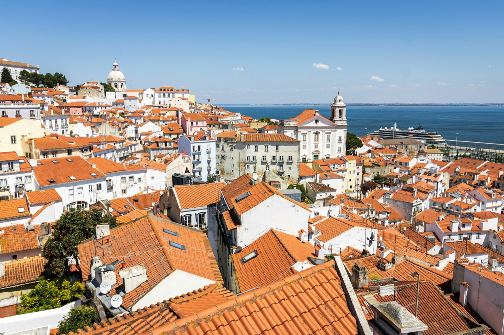

The place
About Lisbon
“
Lisbon is the capital of Portugal, on the river Tagus. Alfama is one of its old quarters, above the river.
Sample data, not real
Three days in Lisbon
You named the place, so there is nothing to compare. Your canvas shows Lisbon, then where to stay, then your days.
Here are hotels from OpenStreetMap, with names and areas. Layover shows no prices. Pick one as your base, or skip it.
Choose Sample Hotel Alfama
Sample Hotel Alfama is your base. Days 1 and 2 are ready. Day 3 has too few sourced places for the afternoon, so I left it free.
Tell me your dates to add weather and daylight, or your airport to add fares.

Lisbon
Portugal’s capital, on the river Tagus.
Photo: João Reguengos, Unsplash. Place line: Wikivoyage, Lisbon, Cached, 4 days old
Fares, costs, weather and daylight for Lisbon appear here once you give dates or an airport.
Hotels from OpenStreetMap, with names and areas. Layover shows no prices.
Three days, each starting from Sample Hotel Alfama.